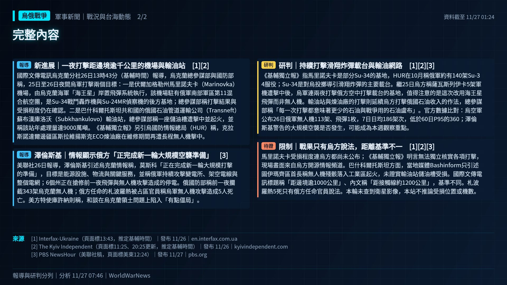

烏總參謀部稱以海王星飛彈打擊伏爾加格勒馬里諾夫卡機場、巴什科爾托斯坦輸油站起火：澤倫斯基警告俄軍即將再度大規模空襲


報導新進展｜一夜打擊距邊境逾千公里的機場與輸油站
國際文傳電訊烏克蘭分社26日13時43分（基輔時間）報導，烏克蘭總參謀部與國防部稱，25日至26日夜間烏軍打擊兩個目標：一是伏爾加格勒州馬里諾夫卡（Marinovka）機場，由烏克蘭海軍「海王星」岸置飛彈系統執行，該機場駐有俄軍南部軍區第11混合航空團，是Su-34戰鬥轟炸機與Su-24MR偵察機的後方基地；總參謀部稱打擊結果與受損程度仍在確認。二是巴什科爾托斯坦共和國的俄國石油管道運輸公司（Transneft）蘇布漢庫洛沃（Subkhankulovo）輸油站，總參謀部稱一座儲油槽遭擊中並起火，並稱該站年處理量達9000萬噸。《基輔獨立報》另引烏國防情報總局（HUR）稱，克拉斯諾達爾邊疆區斯拉維揚斯克ECO煉油廠在維修期間再遭長程無人機擊中。
報導澤倫斯基｜情報顯示俄方「正完成新一輪大規模空襲準備」
美聯社26日報導，澤倫斯基引述烏克蘭情報稱，莫斯科「正在完成新一輪大規模打擊的準備」，目標是能源設施、物流與關鍵服務，並稱俄軍持續攻擊變電所、架空電線與整個電網；6個州正在搶修前一夜飛彈與無人機攻擊造成的停電。俄國防部稱前一夜攔截343架烏克蘭無人機；俄方任命的札波羅熱被占區官員稱烏軍無人機攻擊造成5人死亡。美方特使庫許納則稱，和談在烏克蘭領土問題上陷入「有點僵局」。
研判研判｜持續打擊滑翔炸彈載台與輸油網路
《基輔獨立報》指馬里諾夫卡是部分Su-34的基地，HUR在10月稱俄軍約有140架Su-34服役；Su-34是對烏投擲導引滑翔炸彈的主要載台。繼25日烏方稱薩瓦斯列伊卡5架軍機遭擊中後，烏軍連兩夜打擊俄方空中打擊載台的基地，值得注意的是這次改用海王星飛彈而非無人機。輸油站與煉油廠的打擊則延續烏方打擊俄國石油收入的作法，總參謀部稱「每一次打擊都意味著更少的石油與戰爭用的石油盧布」。官方數據比對：烏空軍公布26日俄軍無人機113架、飛彈1枚，7日日均186架次，低於60日P95的360；澤倫斯基警告的大規模空襲是否發生，可能成為本週觀察重點。
待證限制｜戰果只有烏方說法，距離基準不一
馬里諾夫卡受損程度連烏方都尚未公布；《基輔獨立報》明言無法獨立核實各項打擊，現場畫面來自烏方開源情報頻道。巴什科爾托斯坦方面，當地媒體Bashinform只引述圖伊瑪齊區首長稱無人機殘骸落入工業區起火，未證實輸油站儲油槽受損。國際文傳電訊標題稱「距邊境逾1000公里」、內文稱「距接觸線約1200公里」，基準不同。札波羅熱5死只有俄方任命官員說法。本輪未查到衛星影像，本站不推論受損位置或機數。
- [1] Interfax-Ukraine（頁面標13:43，推定基輔時間）｜發布 11/26
- [2] The Kyiv Independent（頁面標11:25、20:25更新，推定基輔時間）｜發布 11/26
- [3] PBS NewsHour（美聯社稿，頁面標美東12:24）｜發布 11/27